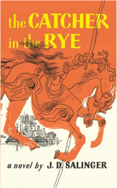
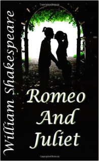
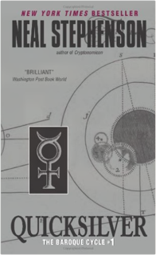
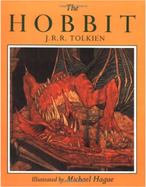

 The Catcher in the Rye J.D. SalingerAnyone who has read J.D. Salinger's New Yorker stories ? particularly A Perfect Day for Bananafish, Uncle Wiggily in Connecticut, The Laughing Man, and For Esme ? With Love and Squalor, will not be surprised by the fact that his first novel is fully of children. The hero-narrator of THE CATCHER IN THE RYE is an ancient child of sixteen, a native New Yorker named Holden Caulfield. Through circumstances that tend to preclude adult, secondhand description, he leaves his prep school in Pennsylvania and goes underground in New York City for three days. The boy himself is at once too simple and too complex for us to make any final comment about him or his story. Perhaps the safest thing we can say about Holden is that he was born in the world not just strongly attracted to beauty but, almost, hopelessly impaled on it. There are many voices in this novel: children's voices, adult voices, underground voices-but Holden's voice is the most eloquent of all. Transcending his own vernacular, yet remaining marvelously faithful to it, he issues a perfectly articulated cry of mixed pain and pleasure. However, like most lovers and clowns and poets of the higher orders, he keeps most of the pain to, and for, himself. The pleasure he gives away, or sets aside, with all his heart. It is there for the reader who can handle it to keep.03167694876C322261-158D-4319-BB18-1D888BC6FB4Fhttp://www.amazon.com/dp/0316769487?SubscriptionId=1XKMQ76GH235KSFB1M02&tag=deliciousmons-20&linkCode=xm2http://www.amazon.com/s?ie=UTF8&index=books&field-author=J.D.%20Salinger&SubscriptionId=1XKMQ76GH235KSFB1M02&tag=deliciousmons-20&linkCode=xm2 Romeo and Juliet William ShakespeareRomeo and Juliet is one of William Shakespeare's classic romantic tragedies. This version is a reprint of the original play.1456490443FFEF486E-66EA-4B0F-8C7B-3735A5CFC77Fhttp://www.amazon.com/dp/1456490443?SubscriptionId=1XKMQ76GH235KSFB1M02&tag=deliciousmons-20&linkCode=xm2http://www.amazon.com/s?ie=UTF8&index=books&field-author=William%20Shakespeare&SubscriptionId=1XKMQ76GH235KSFB1M02&tag=deliciousmons-20&linkCode=xm2 Quicksilver Neal StephensonIn which Daniel Waterhouse, fearless thinker and courageous Puritan, pursues knowledge in the company of the greatest minds of Baroque-era Europe — in a chaotic world where reason wars with the bloody ambitions of the mighty, and where catastrophe, natural or otherwise, can alter the political landscape overnight.006083316580E7B0A1-B8C9-4739-9854-BACABC387601http://www.amazon.com/dp/0060833165?SubscriptionId=1XKMQ76GH235KSFB1M02&tag=deliciousmons-20&linkCode=xm2http://www.amazon.com/s?ie=UTF8&index=books&field-author=Neal%20Stephenson&SubscriptionId=1XKMQ76GH235KSFB1M02&tag=deliciousmons-20&linkCode=xm2 The Hobbit J.R.R. TolkienB0085FXXFQD646652D-70CF-4BEA-8926-250A74808D0Ehttp://www.amazon.com/dp/B0085FXXFQ?SubscriptionId=1XKMQ76GH235KSFB1M02&tag=deliciousmons-20&linkCode=xm2http://www.amazon.com/s?ie=UTF8&index=books&field-author=J.R.R.%20Tolkien&SubscriptionId=1XKMQ76GH235KSFB1M02&tag=deliciousmons-20&linkCode=xm2Slaughterhouse-Five Kurt VonnegutSlaughterhous-Five is one of the world's great anti-war books. Centering on the infamous fire-bombing of Dresden, Billy Pilgrim's odyssey through time reflects the mythic journey of our own fractured lives as we search for meaning in what we are afraid to know.04401802957F3EE78A-CFBF-4831-9E71-766B2AE1A00Ahttp://www.amazon.com/dp/0440180295?SubscriptionId=1XKMQ76GH235KSFB1M02&tag=deliciousmons-20&linkCode=xm2http://www.amazon.com/s?ie=UTF8&index=books&field-author=Kurt%20Vonnegut&SubscriptionId=1XKMQ76GH235KSFB1M02&tag=deliciousmons-20&linkCode=xm2 |